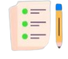

Lista de afazeres
Adicionar
Como você passou as últimas horas?
Focado(a)
contagem:
Descansando
contagem:
Distraído(a)
contagem:
Recomendado:
Reinicie a página a cada novo dia após refletir no equilíbrio entre o seu tempo de foco, descanso e distração